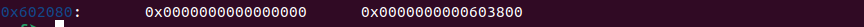

Cache Me Outside
Esta prueba es sobre malloc. Si no conoces que es te recomiendo que busques primero información sobre malloc, free, tcache, pero más importante sobre como funciona chunk en heap y su diferencia entre buffer.
Para esta prueba es bueno que utilices pwninit para enlazar el binario con libc.
Bueno, primero que nada veamos como es la estructura de tcache:
typedef struct tcache_entry
{
struct tcache_entry *next;
} tcache_entry;
typedef struct tcache_perthread_struct
{
char counts[TCACHE_MAX_BINS];
tcache_entry *entries[TCACHE_MAX_BINS];
} tcache_perthread_struct;
Menciona que va agregando hilos de bloques de cache de un tamaño de 64 cada uno consecutivamente.
El objetivo es poder encontrar esos bloques, cambiar lo que hay dentro para posteriormente ejecutar X intrucción.
Para cambiar eso, malloc reserva en heap bloques de espacio dinamico en la pila en la zona head, posteriormente free libera esos espacios para reutilizarlos, pero aquí viene el detalle interesante, free solo libera pero no borra de memoria, así que lo que necesitamos ejecutar aun se encuentra en algun bloque pero hay que encontrarlo.
Vamos a analizar la app, pero antes hagamos una flag.txt temporal, la frase que le coloqué es "lo lograste". Comencemos con saber cosas básicas.
file, strings y ltrace.
Si ejecutamos el programa y buscamos con ltrace, nos muestra algo interesante.
Si revisamos el código con gdb podemos ver que hay registros ya establecidos, que podemos encontrar las frases "Congrats" = 0x73746172676e6f43.
Primero revisamos el código con GDB, y obviamente lo que nos interesa es puts, ya que ahí los registros de malloc ya deben estar en memoria. Ponemos un break y revisamos con gdb los chunks.
Ya que encontramos donde está todo, podemos ver las colocaciones que hace malloc.
Todo empieza en 0x602010, recordemos algo, 0x10 son 16 en decimal, si obervamos la imagen son efectivamente los datos que muestra el primer bloque y da un dato importante que es un 0x02, eso significa que el chunk es muy grande y se tuvo que colocar fuera de heap.
Buscamos las direcciones y encontramos la dirección que esta en los chunks al final 0x0000000000603890.
Veamos el contenido y efectivamente, ahí se encuentran guardados los strings.

Ok, ya encontramos donde están, vamos a ver que pasa cuando le escribimos datos, algo tiene que cambiar ya que recordemos que free solo libera espacio pero no borra.
Perfecto, sobreescribió un bloque, veamos en donde se encuentra en memoria usando grep.
Ahí podemos ver que se encuentra en "0x6034a0 - 0x6034c5", y tiene permisos de lectura, escritura y el offset es 0x602080.
Vamos a calcular entonces "602088 - 6034a0 = −1418 (−5144 en decimal)"
¡¡OJO!!
Esto 0x602088 sale de donde se muestra la siguiente imagen.

Anteriomente era 0x0000000000603890, pero cuando modificamos el bloque, cambió a "0x0000000000603800" y el offset es 0x602080 pero el inicio de "0x603800" comienza despues de 8 bytes, por eso es "0x602088".
Colocamos los datos de nuevo con la información que acabamos de resolver.
Lo ejecutamos en el servidor.
Listo.